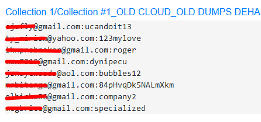

Introduction
Often times when performing OSINT investigations you are preseneted with a gmail account sent to you by a phishing mail or scraped off of a suspicious website. In this short post I will show you some techniques that I use when dealing with gmail accounts and performing Open Source Intelligence caveats on them.
Manual Approach
In the first approach we will discuss checking if the gmail account exists in the first place. One of the easiest method to do this is to just go to the offical gmail sign in page and enter the email you received.
As you can see google tells you if the gmail account is valid or not. Although this is noisy and not OPsec friendly you can still narrow down your search very quickly. For those of you who like terminals you can easily check this with curl using proxychains or any other SOCKS tool to cover your tracks.
curl --head https://mail.google.com/mail/gxlu?email=gengar13790@gmail.com | grep "set-cookie:"
You can see in the output that the response headers don't include set-cookie: header which means the gmail account doesn't exist. This issue was allegedly reported to Google but they ignored it.
Some organizations use their domain names when presenting e-mails but their mail can be managed by Google on the backend. Checking SPF records is the easiest way to determine this. Or you can use the previous method but as it can generate some logs it is not recommended.
dig @NAMESERVER DOMAIN.COM txt
Or you can use some online SPF checker websites if you prefer this approach. So basically if you receive an email for example: villain@attacker.com you can check if the mail is managed by google with the previous command. You should look for include:spf line in the output You can also check the company MX records.
Google is very security oriented and when performing google searches includeing gmail addresses you should include other search engines in your search regime because it was found that Google seems to filter Gmail search results!
Obtaining a Google Account ID
Everyone who has ever done some google OSINT knows about this method because it can yield some fantastic results if leveraged correctly
The way to obtain the ID is pretty straight forward. If you have a gmail account you just enter the target email address in the send field when composing a email or add it to your contact list. You open the developer tools (depending on your browser this will be different) and search for the Domain tab. Inside you should click ont he contact.google.com and in the response tab on the right side search for a long number that starts with a 1. That is a Google userID of the e-mail address you are investigating
Once acquired you can enter it in different URLs to see if you can find any information on Google services like Google maps to see the locations visited by your target or much better
Google Photos to see who is behind the account.
Google Maps --> https://www.google.com/maps/contrib/USERID
Google Photos --> https://get.google.com/albumarchive/USERID
Automating the search with GHunt
This tool is simply fantastic as it covers al the previousl mentioned but just faster. It was written by mxrch and you can find the tool on his GitHub profile: https://github.com/mxrch/GHunt
The only thing you need to use this tool is a valid Gmail account since it needs the cookies to access some of the Google Services. Then you just provide it with a gmail address and you are ready to go. in our private investigations this tool helped us a lot since it can provide you with information not acquireable with manual approaches. I won't cover it in this section because it deserves a tutorial of its own and there are plenty of those on google.
You can also rely on Maltego and Spiderfoot since they have some pretty interesting modules to try. Maltego can let you check different social media and websites associated with an email, along with other email addresses. There are alson free open source tools that can help you with this like for example Mosint https://github.com/alpkeskin/mosint,
Another great site i stumpled upon while researching is https://tools.epieos.com/email.php. It searches some common search engines. It also can provide you with a Google UserID.
You should also check the email address on various leak sites for passwords.
https://intelx.io is my first go website to search for leaks. If you make an account you can make even more searches and also see some dumps that are not accessible when checking without an account.
Check also: https://www.dehashed.com/, https://haveibeenpwned.com/, https://snusbase.com/For .onion sites you should look a little bit deeper. I will be covering this in a later post since it is a bit different than searching for credentials on the clear web, mostly since onion sites tend to be taken down and urls change more frequently.